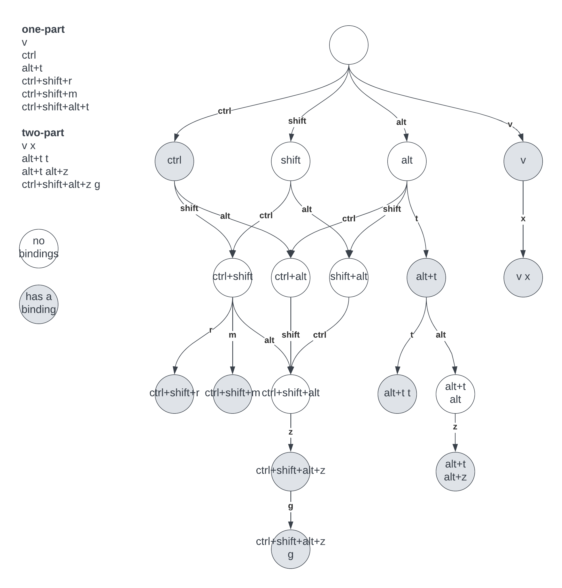

NAP-7 — Key Binding Dispatch#
- Author:
“Kira Evans <mailto:contact@kne42.me>”
- Author:
“Lucy Liu <mailto:lucyleeow@protonmail.com>”
- Created:
2023-07-03
- Status:
Draft
- Type:
Standards Track
Abstract#
With the switching of the internal key binding system to use app-model’s representation[1], there is discussion as to what exactly constitutes a valid key binding and how conflicts are handled[2].
This NAP seeks to clarify and propose a solution for how key bindings will be dispatched according to their priority, enablement, and potential conflicts.
Motivation and Scope#
Plugin developers are able to export commands in their manifest file but cannot similarly set their shortcuts in a code-free way. npe2 provides an option to bind commands to key binding but it is undocumented and unsupported since napari still uses an old dispatch system of chainmaps.
A more versatile system#
The proposed dispatch system would leverage weights to clearly separate default, plugin, and user-defined key binding as well as support a more advanced conditional system which would determine if a keybinding is active/enabled or not. Both of these properties are already part of the specification defined by app-model.
Separation of different sources of key binding makes it easier for a user to determine who set the binding as well as how to restore the default.
Conditional evaluation allows plugin developers to tie their keybinding to a specific viewer state.
Definitions#
modifier keys refer to ctrl, shift, alt, and meta. meta is also
known as cmd, win, or super on osx, windows, or linux, respectively
a base key is a key that when pressed without a modifier key, produces one of the following key codes:
a-z,0-9f1-f12`,-,=,[,],\,;,',,,.,/left,up,right,down,pageup,pagedown,end,hometab,enter,escape,space,backspace,deletepausebreak,capslock,insert,numlock,printscreennumpad0-numpad9,numpad_decimal,numpad_multiply,numpad_divide,numpad_add,numpad_subtract
a key combination is combination of one or more keys; a single modifier
(e.g., ctrl), a single base key (e.g., c) or a base key pressed with one or
more modifier keys, e.g. ctrl+c or ctrl+shift+z
a key chord consists of two parts, of which each can be either a base key
or a key combination, e.g, ctrl+x v
a key sequence refers to a series of inputs by the user which can be a base key, key combination, or key chord
a key binding binds a key sequence to a command with conditional activation
Key binding validity: convenience vs. complexity#
Some users want to use traditional modifier keys as a ‘base key’ in key binding for convenience purposes [2]. However, this can lead to conflicts since many key bindings may include the modifier key in their key sequence and thus cause confusion and cost extra engineering effort.
We propose that:
key combinations can be any number of modifier keys plus a base key (e.g.,
alt+shift+v). For users only, one modifier key (e.g.,alt) is also allowed. Multiple modifier keys (e.g.,alt+shift) are not allowed.a key chord part cannot be an invalid key combination nor a single modifier.
alt tis invalid because the first part is a single modifier (even though it is a valid key combination)ctrl+x altis invalid because the second part is a single modifierctrl+x alt+vis validmeta metais invalid because both parts are single modifiers
The proposal restricts modifier keys being used without a base key, except in
the case of a single modifier key used in isolation, which is allowed for
users. We decided to allow this as the use cases were compelling, for example
binding shift to make a labels layer invisible during press and visible on
release. Napari and plugins will not be able to use single modifier keybindings
but we are open to reconsideration of this for plugins, given demand.
Ultimately we felt this compromise would provide enough user flexibility while
cutting down on any unnecessary complexities.
Detail on how potential conflicts are dealt with can be found in Indirect conflicts.
Detailed Description#
Even with conditional activation, many key bindings may find that they share the exact same key sequence as another key binding (a direct conflict), or that their key sequence is a subset of another key binding’s key sequence (an indirect conflict). This requires the establishment of a system to determine when and how key bindings should be dispatched.
Key binding properties#
All key binding entries contain the following information:
command_idis the unique identifier of the command that will be executed by this key bindingweightis the main determinant of key binding priority. high value means a higher prioritywhenis the context expression that is evaluated to determine whether the rule is active; if not provided, the rule is always considered active(autoset)
block_ruleis enabled ifcommand_id == ''and disables all key bindings of their weight and below(autoset)
negate_ruleis enabled ifcommand_idis prefixed with-and disables all key bindings of their weight and below with the same sequence bound to this command
from dataclasses import dataclass, field
from app_model.expressions import Expr
@dataclass(order=True)
class KeyBindingEntry:
command_id: str = field(compare=False)
weight: int
when: Optional[Expr] = field(compare=False)
block_rule: bool = field(init=False)
negate_rule: bool = field(init=False)
def __post_init__(self):
self.block_rule = self.command_id == ''
self.negate_rule = self.command_id.startswith('-')
Types of key binding rules#
There are three ways to modify how a key binding interacts with a command: an assign rule, a negate rule, and a block rule. Note that negate and block rules only affect key bindings of their weight and below.
An assign rule tells the dispatcher to execute the given command when the rule is enabled:
{
"key": "ctrl+y",
"command_id": "redo",
}
A negate rule is denoted by prefixing the command_id with - and effectively
cancels out assign rules to the same command for that key sequence. For
example, to rebind the example for the redo command above from ctrl+y to
ctrl+shift+z, one would need the following rules:
[
{
"key": "ctrl+y",
"command_id": "-redo",
},
{
"key": "ctrl+shift+z",
"command_id": "redo",
},
]
A block rule is denoted by simply leaving the command_id as blank and
prevents any commands for that key sequence from being executed. This cannot be
set via the GUI. The below example includes a block rule that disables the
previous two rules bound to tab:
[
{
"key": "tab",
"command_id": "points.toggle_last_mode",
"when": "layer_type == 'points'",
},
{
"key": "tab",
"command_id": "labels.toggle_last_mode",
"when": "layer_type == 'labels'",
},
{
"key": "tab",
"command_id": "",
"_comment": "This disables the two previous rules.",
},
]
Direct conflicts#
When two key bindings share the same key sequence, they are considered to be in direct conflict. They are sorted first according to their weight, then whether they are a blocking rule, whether they are a negate rule, and otherwise, based on their insertion order. This is done in ascending order such that higher weights and blocking/negate rules are moved further down the list.
Key bindings will automatically be assigned weights depending on who set them, prioritizing default ones the least and user-set ones the most:
from enum import IntEnum
class KeyBindingWeights(IntEnum):
CORE = 0
PLUGIN = 300
USER = 500
Indirect conflicts#
When a key sequence matches a key binding and is also a sub-sequence of a key sequence used by another key binding, it is considered an indirect conflict.
There are two ways indirect conflicts can exist:
A. The provided key sequence is a single modifier that is a modifier in another
key binding’s key combination or is a modifier in the first key combination of
a key binding’s key chord. For example, a base key of ctrl would conflict
with the key combination of ctrl+c and the key chord of ctrl+x m.
B. The provided key sequence is a base key or key combination that is the first
part of another key binding’s key chord. For example, a key combination of
ctrl+l would conflict with the key chord of ctrl+l p.
There are three potential strategies to deal with this:
Delay - wait for potential subsequent key presses before executing the command.
this is used for case (A) type conflicts
delay defaults to 200ms but is user configurable
after the delay, the press logic for the command will execute
if another key binding is triggered during delay, this action will be canceled
if the base key
ctrlis released early, the press logic will execute immediately and the delay will cease, and the release logic will be executed immediately afterwards
Execute longest key sequence only - for indirectly conflicting key sequences we only ever execute the longer key sequence.
this is used for case (B) type conflicts
the command for
ctrl+lwill never be triggered so long as it indirectly conflicts with another key bindingmulti-part key bindings will always take priority over single-part key bindings
On release only - only allow the key to be bindable to ‘on-release’
Decided against as this would not allow both ‘on-press’ and ‘on-release’ actions.
Finding a match#
When checking if an active key binding matches the entered key sequence, the
resolver will fetch the pre-sorted list of direct conflicts and check if the
last entry is active using its when property, moving to the next entry if it
is not. When it encounters a blocking rule, it will return no match, and for a
negate rule, it will store the affected command in an ignore list and continue
to the next entry. If no special rules are present, it will return a match if
the command is not in an ignore list, otherwise continuing to the next entry,
and so on, until no more entries remain.
In pseudo-code this reads as:
def find_active_match(entries: List[KeyBindingEntry]) -> Optional[KeyBindingEntry]:
ignored_commands = []
for entry in reversed(entries):
if isactive(entry.when):
if entry.block_rule:
return None
elif entry.negate_rule:
ignored_commands.append(entry.command_id[1:])
elif entry.command_id not in ignored_commands:
return entry
Lookup and partial matches#
Key bindings can be stored in a map in integer form, as KeyMod, KeyCode,
KeyCombo, and KeyChord are all represented as unique ints with 16 bits
per part:
keymap = Dict[int, List[KeyBindingEntry]] = {
KeyMod.CtrlCmd | KeyCode.KeyZ: ...,
KeyMod.CtrlCmd | KeyMod.Shift | KeyCode.KeyZ: ...,
KeyMod.CtrlCmd | KeyCode.KeyX: ...,
KeyChord(KeyMod.CtrlCmd | KeyCode.KeyX, KeyCode.KeyC): ...,
KeyChord(KeyMod.CtrlCmd | KeyCode.KeyX, KeyCode.KeyV): ...,
KeyMod.Shift: ...,
}
Due to the ability of key sequences to be encoded as 32-bit integers, bitwise operations can be performed to determine certain properties of these sequences:
def has_shift(key: int) -> bool:
return bool(key & KeyMod.Shift)
def starts_with_ctrl_cmd_x(key: int) -> bool:
return key & 0x0000FFFF == (KeyMod.CtrlCmd | KeyCode.KeyX)
def multi_part(key: int) -> bool:
return key > 0x0000FFFF
As such, entries in the keymap can be filtered to find conflicts:
>>> list(filter(has_shift, keymap))
[<KeyCombo.CtrlCmd|Shift|KeyZ: 3115>, <KeyMod.Shift: 1024>]
>>> list(filter(starts_with_ctrl_cmd_x, keymap))
[
<KeyCombo.CtrlCmd|KeyX: 2089>,
KeyChord(<KeyCombo.CtrlCmd|KeyX: 2089>, <KeyCode.KeyC: 20>),
KeyChord(<KeyCombo.CtrlCmd|KeyX: 2089>, <KeyCode.KeyV: 39>),
]
>>> list(filter(multi_part, keymap))
[
KeyChord(<KeyCombo.CtrlCmd|KeyX: 2089>, <KeyCode.KeyC: 20>),
KeyChord(<KeyCombo.CtrlCmd|KeyX: 2089>, <KeyCode.KeyV: 39>),
]
Note that because modifiers are encoded in the (8, 12]-bit range, querying
for modifiers will only check the first part unless they are shifted by 16:
>>> has_shift(KeyChord(KeyMod.CtrlCmd | KeyCode.KeyX, KeyMod.Shift | KeyCode.KeyY))
False
In a more generic form:
KEY_MOD_MASK = 0x00000F00
PART_0_MASK = 0x0000FFFF
def create_conflict_filter(conflict_key: int) -> Callable[[int], bool]:
if conflict_key & KEY_MOD_MASK == conflict_key:
# only comprised of modifier keys in first part
def inner(key: int) -> bool:
return key != conflict_key and key & conflict_key
elif conflict_key <= PART_0_MASK:
# one-part key sequence
def inner(key: int) -> bool:
return key > PART_0_MASK and key & PART_0_MASK == conflict_key
else:
# don't handle anything more complex
def inner(key: int) -> bool:
return NotImplemented
return inner
def has_conflicts(key: int, keymap: Dict[int, List[KeyBindingEntry]]) -> bool:
conflict_filter = create_conflict_filter(key)
for _, entries in filter(conflict_filter, keymap.items()):
if find_active_match(entries):
return True
return False
Completing the dispatch#
Putting everything together, the following pseudo-code represents the logic of key binding dispatch:
from threading import Timer
from app_model.types import KeyBinding, KeyCode, KeyMod
VALID_KEYS: List[KeyCode] = ...
PRESS_HOLD_DELAY_MS: int = 200
class KeyBindingDispatcher:
keymap: Dict[int, List[KeyBindingEntry]]
is_prefix: bool
prefix: int
timer: Optional[Timer]
active_combo: int
...
def on_key_press(self, mods: KeyMod, key: KeyCode):
self.is_prefix = False
self.active_combo = 0
if self.timer:
self.timer.cancel()
self.timer = None
if key not in VALID_KEYS:
# ignore input
self.prefix = 0
return
keymod = key2mod(key)
if keymod is not None:
# modifier base key
if self.prefix:
# single modifier dispatch only works on first part of key binding
return
if mods & keymod:
mods ^= keymod
if mods == KeyMod.NONE:
# single modifier
if (entries := self.keymap.get(keymod)) and (
match := find_active_match(entries)
):
self.active_combo = key
if has_conflicts(keymod, self.keymap):
# conflicts; exec after delay
self.timer = Timer(
PRESS_HOLD_DELAY_MS / 1000,
lambda: self.exec_press(match.command_id),
)
self.timer.start()
else:
# no conflicts; exec immediately
self.exec_press(match.command_id)
else:
# non-modifier base key
key_seq = mods | key
if self.prefix:
key_seq = KeyChord(self.prefix, key_seq)
if (entries := self.keymap.get(key_seq)) and (
match := find_active_match(entries)
):
self.active_combo = mods | key
if not self.prefix and has_conflicts(key_seq, self.keymap):
# first part of key binding, check for conflicts
self.is_prefix = True
return
self.exec_press(match.command_id)
def on_key_release(self, mods: KeyMod, key: KeyCode):
if self.active_combo & key:
if self.is_prefix:
self.prefix = self.active_combo
self.prefix = False
return
keymod = key2mod(key)
if keymod is not None:
# modifier base key
if self.timer is not None:
# active timer, execute immediately
if not self.timer.finished.is_set():
# not already executed
self.timer.cancel()
self.exec_press(key)
self.timer = None
self.exec_release(key)
self.active_combo = 0
else:
# release segment of key binding
self.exec_release(key_combo)
Implementation#
read and handle plugin key binding contributions (see napari #5338)
convert existing key bindings into actions that can be used by
app-model(see napari #5338)implement key binding resolution system as detailed in this NAP
remove old action manager
deprecate and translate key bindings set via
bind_keyfor backwards compatibility (see below)
Backward Compatibility#
A change in the key binding dispatch system would affect anyone using keymap
or class_keymap from the original KeymapProvider, as well as bind_key
[3].
While keymap and class_keymap are unlikely to be commonly used, bind_key
is, and thus will receive proper deprecation and continue to work by creating
an equivalent entry in the new key binding dispatch system.
For example, following is how a user might have defined a key binding for an
Image layer:
@Image.bind_key('Control-C')
def foo(layer): ...
An entry would be created equivalent to:
def wrapper(layer: Image):
yield from foo(layer)
action = Action(id=foo.__qualname__, title=foo.__name__, callback=wrapper)
entry = KeyBindingEntry(
command_id=foo.__qualname__,
weight=KeyBindingWeight.USER,
when=parse_expression("active_layer_type == 'image'"),
)
register_action(action)
register_key_binding('Ctrl+C', entry)
Future Work#
Future work may include key binding completion suggestions for key chords when the user inputs the first part of a binding.
Out of scope is work related to the GUI and how it may have to handle the new system.
Alternatives#
Although a mapping approach is very effective for looking up individual keys, it loses its efficiency when performing a partial search, since its items are traversed like a list to perform that search.
This inefficiency can be mitigated by using a data structure where entries are stored similar to a trie (aka a prefix tree). Since modifier keys do not care about what order they are pressed in, we will use a directed acyclic graph instead of a traditional tree, essentially making this a prefix multitree.

Fig. 1: Example of a prefix multitree. Filled nodes have at least one key binding as detailed on the legend in the top left corner.#
This effectively breaks the key sequences of the key bindings into their respective components, as in Fig. 1, and can be represented with a fairly simple data structure:
from app_model.types import KeyBinding
@dataclass
class Node:
value: KeyBinding
root: List[KeyBindingEntry]
children: Dict[KeyCode, Node]
To check if a key binding has an indirect conflict, the children of the node can be recursively searched depth-first:
def has_active_children(children: Dict[KeyCode, Node]) -> bool:
for child in children.values():
if find_active_match(child.root):
return True
elif has_active_children(child.children):
return True
In the mapping case, imagine that every possible valid key binding has at least one entry. Letting K be the number of valid key codes, the amount of possible combinations for the first part of a key chord would be 16 * K, plus 4 to include single modifiers. Combining this with the second part, it would be (16 * K + 4)(16 * K), resulting in a conflict search runtime complexity of O(n).
On the other hand, for a prefix tree, the amount of options for each node would be at most K - D, where D is the depth of the node relative to the last completed part. When searching a key sequence with 4 modifiers for each part, the maximum number of options visited for one part would be K + (K-1) + (K-2) + (K-3) + (K-4), or 2(5K-10) for two parts, resulting in a conflict search runtime complexity of O(log(n)).
Therefore, when searching for indirect conflicts, using a prefix-based data
structure would be more efficient than a mapping-based one. However, when
put to a test on VSCode’s default key bindings,
which are comprised of approximately 900 entries, the difference in speed was
not significant, with the prefix tree approach finishing only 59ms faster with
an average of 109ms over the mapping one with an average of 168ms over 700
runs. For the test, when conditionals were simulated to take 3µs to evaluate
and both methods were searching for the conflict of the most common modifier
(which would be Ctrl on Windows/Linux or Cmd on macOS).
Although the prefix tree is approximately 50% faster at finding indirect conflicts, a difference of ~60ms is not significant enough to be noticed by the user. It then comes down to other factors to determine which implementation is better. While a prefix tree approach would be able to handle more than two-part key bindings, it is arguable that any more parts might be confusing to the user. It’s also possible to save the “state” of the search in the sense of narrowing down to a specific node, which may be useful for key binding completion.
However, the mapping approach is a lot cleaner code-wise, as it requires no additional logic to construct or update the data structure. Additionally, the user and the GUI can much more easily read this data structure and perform more complicated searches on it using bitwise operations. The mapping approach was ultimately chosen due to its lower barrier of entry to read and maintain for developers.
Discussion#
April 19, 2023: napari #5747 is opened, with discussion about what should be valid as a key binding. Arguments are made for the inclusion of single-modifier key bindings.
Copyright#
This document is dedicated to the public domain with the Creative Commons CC0 license [4]. Attribution to this source is encouraged where appropriate, as per CC0+BY [5].